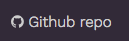

Organisation des pages
Dans Hugo, les pages sont le cœur de votre site. Une fois configurées, les pages sont la valeur ajoutée de votre site de documentation.
Dossiers
Organisez votre site comme n’importe quel autre projet Hugo. Typiquement, vous allez avoir un dossier content avec vos pages.
content
├── niveau-un
│ ├── niveau-deux
│ │ ├── niveau-trois
│ │ │ ├── niveau-quatre
│ │ │ │ ├── _index.md <-- /niveau-un/niveau-deux/niveau-trois/niveau-quatre
│ │ │ │ ├── page-4-a.md <-- /niveau-un/niveau-deux/niveau-trois/niveau-quatre/page-4-a
│ │ │ │ ├── page-4-b.md <-- /niveau-un/niveau-deux/niveau-trois/niveau-quatre/page-4-b
│ │ │ │ └── page-4-c.md <-- /niveau-un/niveau-deux/niveau-trois/niveau-quatre/page-4-c
│ │ │ ├── _index.md <-- /niveau-un/niveau-deux/niveau-trois
│ │ │ ├── page-3-a.md <-- /niveau-un/niveau-deux/niveau-trois/page-3-a
│ │ │ ├── page-3-b.md <-- /niveau-un/niveau-deux/niveau-trois/page-3-b
│ │ │ └── page-3-c.md <-- /niveau-un/niveau-deux/niveau-trois/page-3-c
│ │ ├── _index.md <-- /niveau-un/niveau-deux
│ │ ├── page-2-a.md <-- /niveau-un/niveau-deux/page-2-a
│ │ ├── page-2-b.md <-- /niveau-un/niveau-deux/page-2-b
│ │ └── page-2-c.md <-- /niveau-un/niveau-deux/page-2-c
│ ├── _index.md <-- /niveau-un
│ ├── page-1-a.md <-- /niveau-un/page-1-a
│ ├── page-1-b.md <-- /niveau-un/page-1-b
│ └── page-1-c.md <-- /niveau-un/page-1-c
├── _index.md <-- /
└── premiere-page.md <-- /premiere-page
Le fichier _index.md est obligatoire dans chaque dossier, c’est en quelque sorte votre page d’accueil pour le dossier.
Types
Hugo-theme-learn définit deux types de pages. Défaut et Chapitre. Les deux sont utilisables à n’importe quel niveau du site, la seule différence est dans l’affichage.
Un Chapitre affiche une page vouée à être une introduction pour un ensemble de pages filles. Habituellement, il va seulement contenir un titre et un résumé de la section. Vous pouvez définir n’importe quel contenu HTML comme préfixe de l’entrée du menu. Dans l’exemple ci-dessous, c’est juste un nombre mais vous pourriez utiliser une icône.

+++
title = "Démarrage"
weight = 5
pre = "<b>1. </b>"
chapter = true
+++
### Chapitre 1
# Démarrage
Découvrez comment utiliser ce thème Hugo et apprenez en les concepts
Pour dire à Hugo-theme-learn de considérer la page comme un chapitre, configure chapter=true dans le Front Matter de la page.
Une page Défaut est n’importe quelle autre page.

+++
title = "Installation"
weight = 15
+++
The following steps are here to help you initialize your new website. If you don't know Hugo at all, we strongly suggest you to train by following this [great documentation for beginners](https://gohugo.io/overview/quickstart/).
## Create your project
Hugo provides a `new` command to create a new website.
```
hugo new site <new_project>
```
Hugo-theme-learn fournit des archétypes pour vous aider à créer ce type de pages.
Configuration des Front Matter
Chaque page Hugo doit définir un Front Matter dans le format yaml, toml ou json.
Hugo-theme-learn utilise les paramètres suivant en plus de ceux définis par Hugo:
+++
# Le Sommaire (table of content = toc) est activé par défaut. Modifier ce paramètre à true pour le désactiver.
# Note: Le sommaire est toujours désactivé pour les chapitres
disableToc = "false"
# Le titre de la page dans le menu sera préfixé par ce contentu HTML
pre = ""
# Le titre de la page dans le menu sera suffixé par ce contentu HTML
post = ""
# Modifier le type de la page pour changer l'affichage
chapter = false
# Cache la page du menu
hidden = false
# Nom de la personne qui a modifié la page. Quand configuré, sera affiché dans le pied de page.
LastModifierDisplayName = ""
# Email de la personne qui a modifié la page. Quand configuré, sera affiché dans le pied de page.
LastModifierEmail = ""
+++
Ajouter une icône à une entrée du menu
Dans le Front Matter, ajouter un paramètre pre pour insérer du code HTML qui s’affichera avant le label du menu. L’exemple ci-dessous utilise l’icône de Github.
+++
title = "Repo Github"
pre = "<i class='fab fa-github'></i> "
+++

Ordonner les entrées dans le menu
Hugo permet de modifier facilement l’ordre des menu.
La manière la plus simple est de configurer le paramètre weight avec un nombre.
+++
title = "Ma page"
weight = 5
+++
Page d’accueil
Pour configurer votre page d’accueil, vous avez trois choix:
- Créer une page
_index.mddans le dossiercontentet remplissez le fichier avec du contenu Markdown - Créer une page
index.htmldans le dossierstaticet remplissez le fichier avec du contenu HTML - Configurez votre serveur pour automatiquement rediriger la page d’accueil vers l’une de vos pages.